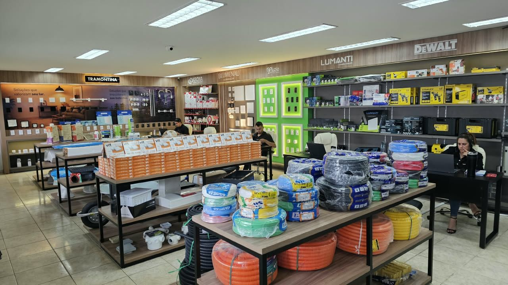
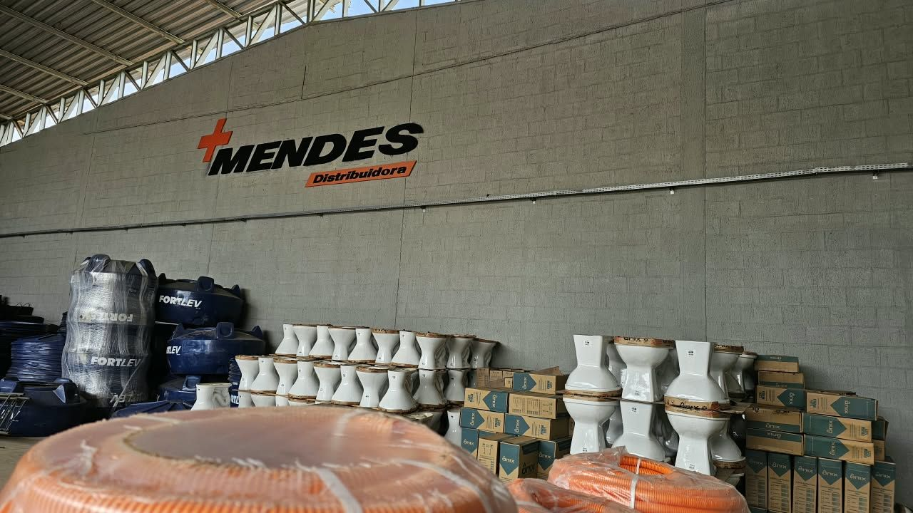
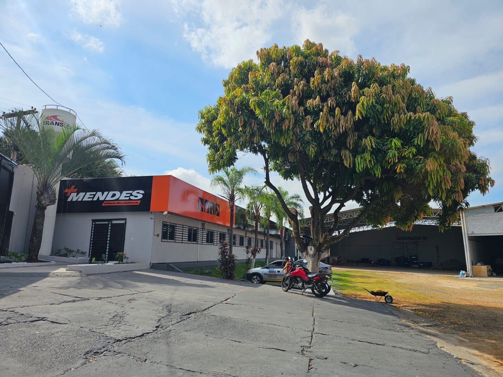
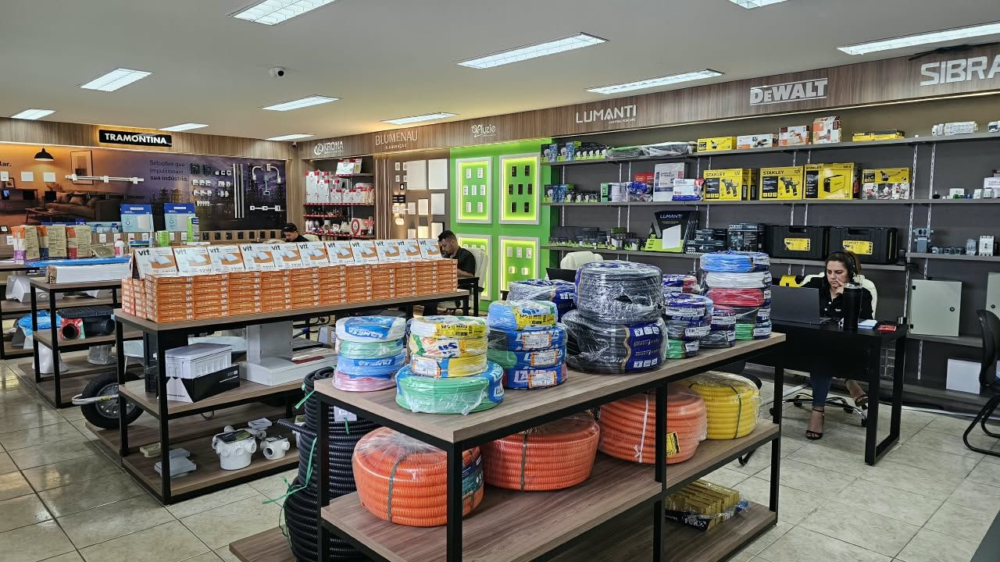
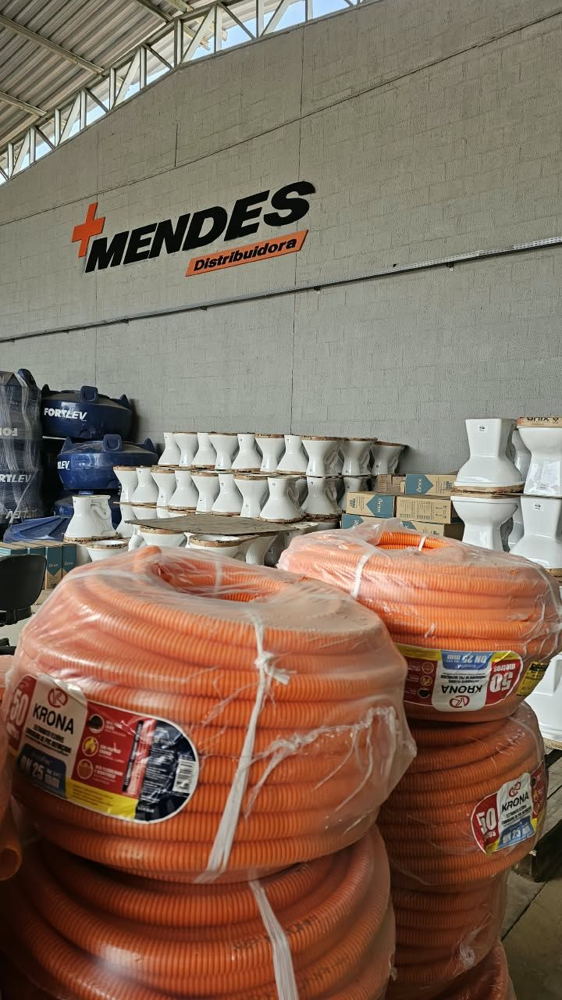
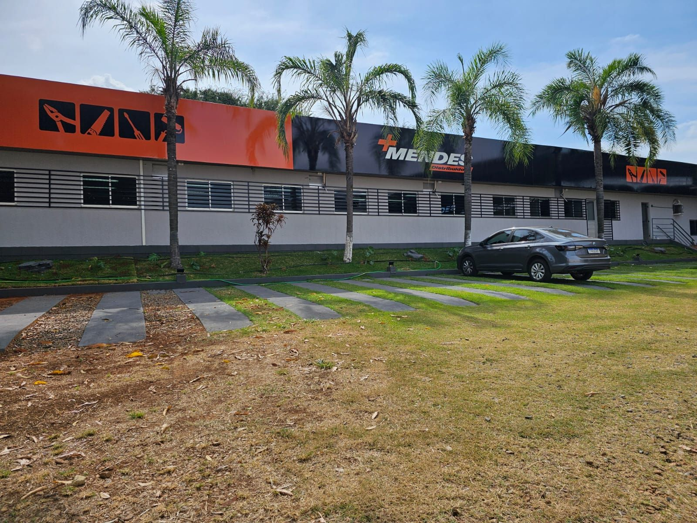
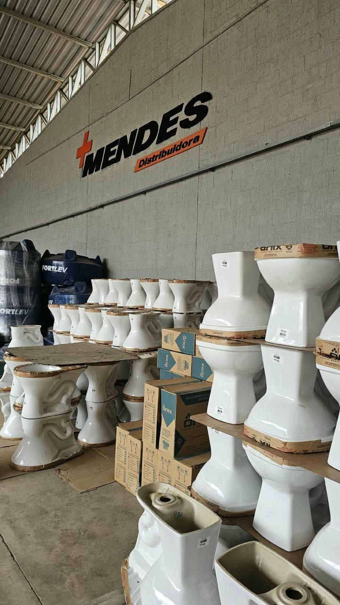

De Goiânia para todo o Brasil
Conheça a história da Mais Mendes Distribuidora. Desde 2001, construímos uma trajetória no setor de materiais elétricos e hidráulicos, atendendo profissionais da construção civil, empresas e clientes em diferentes regiões do Brasil.
A história da Mais Mendes Distribuidora: de Goiânia para o Brasil
Grandes histórias são construídas por pessoas que enxergam oportunidades, acreditam em seus projetos e trabalham para transformá-los em realidade.
A história da Mais Mendes Distribuidora começou em 2001, em Goiânia (GO), com uma loja de materiais elétricos e uma indústria de padrões elétricos. Desde o início, a empresa esteve ligada ao setor da construção civil, atendendo às necessidades de profissionais, empresas e consumidores.
Ao longo dos anos, a Mais Mendes acompanhou as transformações do mercado e ampliou sua atuação. Um dos momentos mais importantes dessa trajetória aconteceu em 2019, quando a empresa iniciou uma reestruturação que abriu caminho para novas oportunidades comerciais.
Com a ampliação do portfólio e a inclusão de soluções hidráulicas, a Mais Mendes fortaleceu sua atuação como distribuidora de materiais para construção, passando a atender clientes de diferentes regiões do Brasil.

25 anos em 5 capítulos
Conheça os principais marcos da Mais Mendes, desde sua origem como loja de materiais elétricos em Goiânia até a expansão como distribuidora de materiais elétricos e hidráulicos para diferentes estados brasileiros.
- 2001
O começo em Goiânia
Uma loja de materiais elétricos e uma indústria de padrões elétricos.
- 2019
Uma nova direção
Em junho, Lucas assume a empresa num momento de crise e inicia a reestruturação.
- 2019
Expansão para materiais hidráulicos
O portfólio ganha soluções hidráulicas e a Mais Mendes vira distribuidora.
- 2020
Expansão das vendas para outros estados
Novos canais de venda e clientes em diferentes regiões do país.
- 2026
25 anos de história
Mais de 2.000 produtos e uma visão voltada para crescer com os clientes.
2019: a transformação e expansão da Mais Mendes
Toda grande transformação começa com uma decisão.
Em junho de 2019, a Mais Mendes iniciou uma nova etapa de sua história. Diante de um cenário de dificuldades financeiras, Lucas assumiu o desafio de reorganizar a empresa e construir uma nova direção para o negócio.
A reestruturação envolveu mudanças na gestão, ampliação do portfólio de produtos e busca por novas oportunidades comerciais. Nesse processo, a Mais Mendes passou a oferecer soluções hidráulicas, complementando sua atuação no segmento de materiais elétricos.
Essa transformação contribuiu para consolidar a empresa como uma distribuidora de materiais elétricos e hidráulicos, com uma oferta mais completa para profissionais da construção civil, instaladores, empresas e consumidores.
O que começou como um projeto de reconstrução tornou-se uma trajetória de expansão.

De Construtor para Construtor
A construção civil faz parte da história da Mais Mendes. Conhecemos as necessidades de quem trabalha com instalações elétricas, hidráulicas, obras e reformas.
Por isso, oferecemos um catálogo com mais de 2.000 produtos, reunindo materiais elétricos e hidráulicos de marcas reconhecidas para atender eletricistas, instaladores, construtoras e consumidores.
Nosso compromisso é oferecer variedade, preços competitivos e atendimento especializado para ajudar cada cliente a encontrar os materiais adequados ao seu projeto.
No que acreditamos
Na Mais Mendes Distribuidora, confiança, transparência e atendimento especializado fazem parte da nossa relação com profissionais da construção civil, empresas e consumidores.
Confiança
Trabalhamos com materiais elétricos e hidráulicos de marcas reconhecidas, emissão de nota fiscal e informações claras sobre frete, trocas e condições de compra.
Transparência
Apresentamos preços, condições de pagamento, valores de frete e prazos de entrega antes da finalização do pedido.
Relacionamento
Oferecemos atendimento especializado para eletricistas, instaladores, construtoras e clientes que buscam materiais para obras, instalações e reformas.
Nossa estrutura
Loja, estoque e expedição no Setor Capuava, em Goiânia.





Parcerias que dão garantia
Somos parceiros do CREA-GO e trabalhamos com fabricantes como Tramontina, Krona, Lamesa, Stanley e DeWalt.
Profissionais com registro no CREA-GO têm condições exclusivas na Mais Mendes.
A história continua
A história da Mais Mendes Distribuidora continua sendo construída com investimento, novas parcerias e soluções para o setor da construção civil.
Seguimos ampliando nossas oportunidades comerciais e oferecendo materiais elétricos e hidráulicos para profissionais, empresas e consumidores que buscam qualidade, variedade e atendimento especializado.
Mais Mendes Distribuidora. Desde 2001, construindo nossa história ao lado de quem constrói.